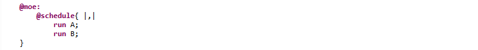

If both processes terminate, they are evaluated simultaneously if possible (for example, there must be no concurrent access), otherwise the evaluation fails. If one of the processes does not terminate, the other one will be evaluated alone.
Considering 2 processes : P and Q, with simple parallel, both processes are evaluated :
Applying this on our most basic example, the "@moe:" section looks like :
And exploring the different paths with the symbolic engine (3, 4 and 5 evaluation steps) gives us (here the execution is simultaneous because nothing prevents it from doing so) :